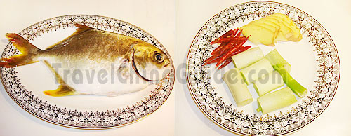
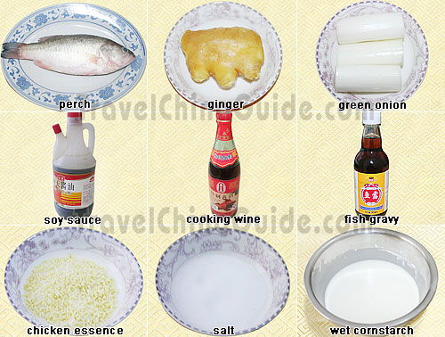
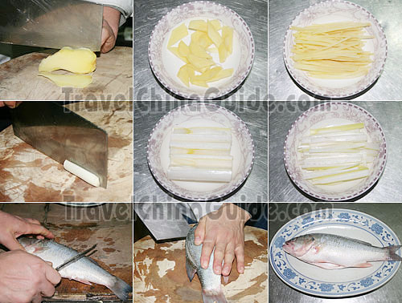

Braised Pomfret FISH
 Chinese name:(hóng shao chang yú)
Chinese name:(hóng shao chang yú)Characteristics: Braised Pomfret is salty and fresh, with an attractive golden color. Being a home-style dish, Braised Pomfret is simple to cook. Pomfret is a welcomed fish among the people, for it has more meat and few bones. It is rich in protein, unsaturated fatty acids and multi-microelements. Thus, it is really a good food helping to replenish qi (essential energy), nourish the blood and calm the nerves.Braised Pomfret |
|

Ingredients: 1 pomfret, around 400 g green onion sections ginger slices dry chili peppers salt five spices powder soy sauce white sugar vinegar cooking wine Note: the amount of the ingredients especially the seasonings listed above can be appropriately used according to one's personal taste. Methods: Step 1: Place a wok over high heat until hot. Add some cooking oil, and add in the cleaned pomfret. Turn to medium heat, and fry it for about 1 minute on both sides. Remove the pomfret from the wok. Fry Pomfret Step 2: Add in salt, five spices powder, soy sauce, cooking wine, white sugar, vinegar and 1/3 bowl of water, and heat over high heat until the juice is boiling. Add in the fried pomfret. Color the Pomfret Step 3: Add in ginger slices, green onion sections and dry chili peppers. Stew it for a further 6-8 minutes over medium heat. |
Steamed Perch
 Chinese name:(qing zheng lú yú)
Chinese name:(qing zheng lú yú)Style: Guangdong Cuisine Characteristics: Steamed Perch is characterized by an emphasis on freshness and aroma. Steamed Perch is a lighter food, but it gives out the freshness and tenderness of perch fully. Perch is rich in multi-nutrition. Its DHA is the highest among the freshwater fishes, so it is very helpful for enriching the brain. Besides, it also contains high-quality protein but with low fat. |
|

Ingredients: 1 perch, around 600 g ginger green onion sections soy sauce cooking wine fish gravy (a kind of sauce especially used for cooking fish) salt chicken essence (chicken stock/bouillon) wet cornstarch (cornstarch mixed with a little water to make a smooth paste) sesame oil, optional Note: the amount of the ingredients especially the seasonings listed above can be appropriately used according to one's personal taste.  Preparation:
Step 1: Sprinkle some cooking wine and salt on the prepared perch. Put the ginger slices and green onion sections on it and put some in. Salt it for 15-20 minutes. Salt the Perch Step 2: Fill the steamer pot 1/4 full of water and put the steamer basket in. Put the perch dish on the basket and cover it. Turn on the heat to steam it for 8-10 minutes. Turn off the heat, and steam it for a furthur 6-8 minutes without heat. Pick it out. Steam the Perch Step 3: Place a wok over high heat until hot. Add some cooking oil, swirling to coat sides. Pour in the fish juice of the steamed perch. Add in the soy sauce, fish gravy, salt, chicken essence and wet cornstarch. Stir-fry it for 20 seconds on high heat. Stir-fry the Juice Step 4: Remove the ginger slices and green onion sections on the perch used for steaming, and put on the ginger and green onion shreds on it instead. Pour the stir-fried juice on it, too. Meanwhile, sprinkle some sesame oil on it to make it more fragrant and delicious. Season the Perch |
Oriental sea bass
 A whole fish cooked with ginger, garlic and spring onions is a traditional centrepiece in a Chinese meal. Here it is served with a mixture of noodles and bean sprouts to make a very special dish.
A whole fish cooked with ginger, garlic and spring onions is a traditional centrepiece in a Chinese meal. Here it is served with a mixture of noodles and bean sprouts to make a very special dish. Ingredients: 1 tsp sunflower oil 1 sea bass, about 800 g (1¾ lb), cleaned and scaled 1 lime, cut into 4 slices 6 spring onions, cut into fine shreds 1 carrot, cut into fine matchsticks 2.5 cm (1 in) piece fresh root ginger, cut into fine matchsticks 2 garlic cloves, thinly sliced 2 tbsp light soy sauce 1 tsp toasted sesame oil 1 tbsp fresh coriander leaves fresh coriander leaves to garnish 250 g (8½ oz) fine Chinese egg noodles 1 tbsp sunflower oil 2 small red onions, cut into very thin wedges 1 garlic clove, thinly sliced 300 g (10½ oz) bean sprouts 3 tbsp light soy sauce Methods:
|